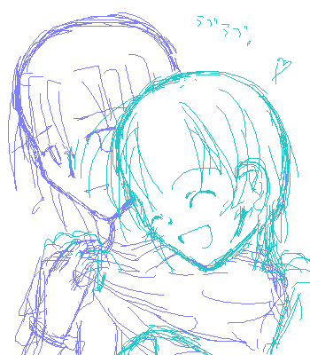
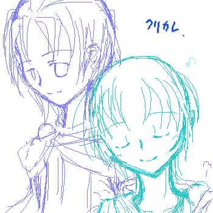

・クリカレの意味が解ってる方（not分かってる方）・
・管理人が暴走してても構わないよ！な方・
そんな貴方だけ、スクロールカモン。
…きっとそこまでは痛々しくないと思うんだ！；
２００７年３月、追記。最後にまとめて。
…人とは変わるものです。（遠い目）
…えーっと。
まあ、裏日記で書いたクリカレ定義書き留めとこうかなってくらいなんですが。
所々追記修正とか絵追加とかしつつ。
そのうちテラタタ定義とかヒュジフォル定義とかも同じ感じでやってみるつもりです。
第一発目がクリカレなんですかってツッコミは知りません。（…）
だ、だって第三次創作だもん！；
以下、裏日記に書いた文章より。所々いじってます。えへ！（…）
＊
さて、そんな訳でクリカレ定義ですが。
とりあえずこの二人、一言で表現するなら、
「寒い夜に抱きしめる縫いぐるみ同士」…です。
…あ、こら、そこ引かない！；
なんと言うか、ほら、小さい頃って心細い夜に縫いぐるみと寝たりするじゃないですか。
寂しい時に寄り添えあえるような、そんな関係。…うわ打ってて楽しいけど恥ずかしいな！；
で、重要なことは。
普段は本人たちにその気が全く無いという事です。
多分、全く恋愛対象として見ていません（笑。
まあ、彼ら二人の自覚が無いだけで、ハタから見たら思いっきりほのぼのラブラｂ（略。
あくまでもほのぼのです。
…いや、何となくそんな感じなんです よ 多分！；
…うん、こんな感じ。

ハタから見たらどっかのバカップルにしか見えませんが（…）
本人達にその気はまったくありません。…だから言ってるじゃないか＋と×の中間だって！（…）
甘えさせてあげるおにーちゃんと人にくっ付くのが好きなおとーとみたいな感じで良いよ！もう！このバカップｒ（禁句。
…要はクリスケが人懐っこすぎるのがいけないと思いました。
でもってクリスケがことさらにカーレッジに懐いてるのがいけないと思いましｔ（…）
…で、まあ、攻め受けの関係は（待てい）、
裏のカップリングガイドにもありますが、クリスケ×カーレッジです。
…あ、えと、第三次創作の時ですからね？；
逆転することは本当に稀ですが、それはまた後に。
大抵クリスケがカーレッジにくっ付いてる感じです。
ちなみに裏日記で描いたその記事の絵はこんな。

…やっぱりおにーちゃんとおとーとですかそうですか。
もう一度言いますが、本人たちにその気はありません。
…ははは、恥ずかしがって逃げるとかも無いから余計最強だなこいつらは！；
こんな風にクリスケがカーレッジにくっ付いてるのとか日常茶飯事ですから。
もはや誰も気にしません。大丈夫か
で、まあ、本人達にとりあえずその気は無いので。キスとかに発展する事はほとんど無いです（笑。
本人達の意識は×ではなく＋なので、ははははは。
が。
クリスケがパニックに陥ったり理性吹っ飛ばしたりしちゃった場合は大変です。
（あ、ここからどんどん発言痛々しくなりますので既に引いてる方はそろそろ帰りましょう/笑）
前提＝第三次創作ですから。
とりあえず例を挙げると、悪い夢や怖い夢を見て、寝ボケて飛び起きた時とか、
なんらかの原因で酔っ払った（ぇえ）時とか。
ああ、ちなみにうちのクリスケは万が一お酒を飲んでしまった場合半分寝てるような感じで色んな人にふにふにくっ付いてます。
…何なんだろうこの主人公。
大抵の場合はくっつかれ役はカーレッジですが（苦笑）
ちょっとお酒が入ると本当に誰だろうとくっ付いて寝ちゃいます。たとえ某テレサだろうと（…。
…えーと、一応書きますが飲酒は２０になってから！（笑）アルコールって二次元でとっても素敵なアイテムですよね！ｖ
悪夢の場合、カーレッジが絡んでたりすると（原版読んだ方なら分かるかな）さらにタチが悪いことに。
少々のことでは落ち着いてくれません。
で、まあ。 ク リ カ レ 本 領 発 揮 と。（……）
クリスケ攻めですよ、はははは。さあ引くなら引くが良いさ！！
お互いに純粋な人たちなのでせいぜいキス止まりですが…いや、ごめんなさい。
（…え？いや口は行かないんじゃないかな流石に多分。）
どんなに行っても首筋とか鎖骨キス止まり。…背中はよっぽどの事が無ければ無い…と良いな…！
カーレッジも、ぽんぽん背中叩きながら受け止めてあげます。
いや、まあ、うん。そんな関係。
で。
本当に極稀に攻め受けが逆転するのは、
カーレッジがよっぽどの悪い夢とか見ちゃった時でしょうか。
大抵は飛び起きても一人で耐えてますが、
声とか聞いて不思議に思ったクリスケが覗いてきたりしたら多分そこでアウト。
えー、うーん、例えばアリウス滅亡した時の事を生々しく夢で再体験しちゃったとか、
…クリスケが目の前で（ネタバレのため妨害電波横断中）…な夢を見ちゃった時とか。
原版ステージ６をお読みの方。えーと、“あの時”に、本編の流れとは違ってカーレッジが間に合わなかったとお考え下さい。
とは言えカーレッジなので（何だその理由付け）、
キスなんてめったに無いです。せいぜいしたとしても額とか頬とかに軽く。
…耐えるように無言で抱きしめてる方が多いんじゃないかｔ（略。
こんな事滅多に無いので、突然の展開にクリスケも大分びっくりしますが、
多分大人しくしてるんじゃないかｎ（……）
ちなみに。
この二人が同じタイミングで悪夢とか見てしまった場合、
多分勇者ズ内で最強になります。
両者とも精神状態がグラグラになってるので、ブレーキ無いです。誰か止めてやってください。
クリスケがカーレッジを押し倒してしまいかねません（ 待 て テ メ ェ ）
でもとりあえず、どんな事があってもこの二人はエロ方面には進展しません（笑。
「好き」っていうか、単純に「本当に大切」な相手なので。
＊
…基本的にうちはＢＬっていうとこういう関係のキャラばっかり好きになっているような。
…うん、某エドアルとか？某クラリュカとか？（全然某の意味が無くなってます）
…好きなんだもん！好きなんだもん！！；
ちなみに何でこんな特別な定義ページ立てたって、
裏日記ログ格納の所にしまうには長すぎたのと、溜まりに溜まってくクリカレ落書きの整理のため。
…すいません、裏日記以外でもぼちぼち描いててすいません。反省してないです。（こら。
落書きを描いたら追記される可能性もアリ。
…何というか、もう開き直りましたよはっはっは。
クリカレで書きたいネタは基本完結後に集中してるので、さっさと四勇者進めたい所です。
…す、進めてますって！愛が更新に繋がらないんです！orz
原版別館に裏も作らなければ駄目だろうか…；
２００６．１０．１０
多分次は、テラタタ定義。
以下追記。
え、ちょ、テラタタ定義まだ上がってないのに。
テラとタータの出会い小説がまだＵＰしてないからしたくても出来ないんだよ…！orz
暴走度＋１００００。（多いな）
深夜絵チャモードです。ＢＬ全開です。先に諸注意。
・精神年齢が１５以下の方は逃げてください。
・微妙に発言がえろいです。
・何ていうかゴメンナサイ
・ほのぼのＢＬが好きな人は回れ右！
・もう手遅れかもしれないけど、
ちゃんとした本編のクリスケ＋カーレッジのイメージを大切にしたい方も回れ右！
・１０月に書いた上の定義がなんかぶち壊れています矛盾しています
・読んだ後の文句は２４時間受け付けません
・管理人に幻滅しないでいてくれたらとても嬉しいです（…）
・人は変わるものです（どーん）
・おかしいな自分クリカレ主義者だったはずなのに
いや…うん…こいつらはただ単に仲良し過ぎなだけだと思ってたんだけど、さ…。
なんかこの秋〜冬で腐女子レベルが３０くらい上がっちゃって、さ…。
……高校に入った頃はまだせいぜい痛んでるくらいだったのに…（遠い目/もはや完全に腐った）
ぐれまさ（ジャンル外by少年陰陽師）とクラロイ（ジャンル外byテイルズオブシンフォニア）にハマったのが間違いでした多分。
……ＢＬはキスまでの世界じゃなかったよ！（中学時代ゴールインがあるなんて知らなかった/爆）
…あと文芸部の友人に某薔薇漫画を借りたのも間違いだったと。もう引き返せないＮＥ☆
後悔はしていな（略。
さあ読む前に例の合言葉を！
This is 第三次創作。
とりあえず、カーレッジ×クリスケに発展できないのはカーレッジがヘタレだからです。（言い切った）
でも最近は脳内で発展してきてしまったのです。
クリスケ誘い受けで。
…………ああ、堕ちたね、俺。
軽いキスならこの二人が脳内でひょいひょい交わすようになってきてしまいました。え、どうしよう。
主にクリスケから。（…）
だから普段の関係はクリカレ。カーレッジは自分からはほとんどしませんよ。
クリスケ本人の意識は単なる挨拶に似た愛情表現です。
ほら、猫馬鹿の人が自分の猫にちゅーとかしてるのと一緒だよ！すりすりぎゅーしてるのと一緒だよ！；
………orz（←そんな猫馬鹿の一人）
…ええとまあそんな事はおいといてー。
とりあえず仲良しなんです。ええそうなんです。
カーレッジもクリスケがくっついてきたらぎゅーぐらいは返してあげます。
そう、だから、普段は、クリカレ。
…普段は。
カーレッジが何も出来ないというかしようとしないのはヘタレだからです。この野郎。
恋愛に関してはヘタレな王様。大丈夫か。
まあそんな、訳、なんです、が。
……クリスケが大丈夫だと言ってくれればカーレッジも散々オロオロしながらですが攻められます。
………言ってしまった…（…）
カーレッジヘタレ攻め×クリスケ誘い受け方程式、完成。（非常時の場合有効）
非常時ってまあ非常時ですよ。
何か落ち込んでたとかトラブルがあったとか生死彷徨ったとか悪夢見たとか酒飲んだとかパニクったとか。（後半が妙）
多分…クリスケがそこでカーレッジにぎゅーするとか軽いキスとかして大丈夫だから信じろとか言って、
そこからやっとカレクリに切り替わるんじゃないですか？（痛）
とりあえず…。
普段は軽いキスぐらい挨拶気分でひょいひょいやっちゃうクリスケなんですが、
…いざって時は何も出来なくなります……（苦い微笑/痛２
まあそんな訳で普段はクリカレ。いざって時カレクリ。そんな二人組み。
ちなみにどこまで行ってるんだって？
えー…以前某さんに聞かれた時はそんなに行ってないと答えたんですが…。（確か）
現に原版別館に上げた第三次創作ＳＳも軽い口付けにまでしか行ってないんですが…。
…水面下というか携帯で暇つぶしに打ってたＳＳでは、
先日とうとうディープキスまでクリアしてしまいました（×）
カーレッジが某勇者ノコノコか某テレサに吹き込まれていたようです。
クリスケがいっぱいいっぱいでしたよ、はははははは（乾いた笑み）
とりあえず意地としてゴールインはさせません。多分。
だってほら多分両者知識が無いんだ、うん。らぶらぶするのは上半分おんりぃぷりーず。
せいぜいＲ１５ギリギリ…というかＲ１５の境界線ってどこから…？；
でぃ、でぃーぷきすまででもう勘弁して下さい自分の妄想力さん。うぇーい。
…おかしいな、１０月時点では「この二人はエロには発展しない！」って断言してたはずなのに……。
…人は、変わるものですよ、ね？（遠い目）
とかいって来年になってみたら、
もっと痛々しい事になっていただなんて事には、ならないでいて、欲しい。（切実
２００７．３．１７